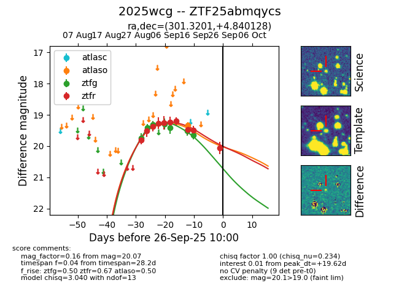
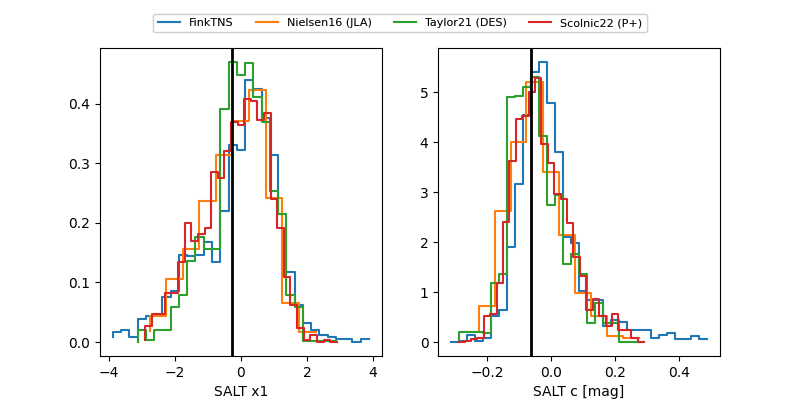

FINK: ZTF25abmqycs
Lasair: ZTF25abmqycs
ALeRCE: ZTF25abmqycs
TNS: 2025wcg
YSE: 2025wcg
ZTF25abmqycs (ztf,fink)
2025wcg (tns,yse)
equatorial (ra, dec) = (301.3201,+4.84013)
galactic (l, b) = (45.9757,-14.02460)


last atlaso=19.34, ztfg=19.65, ztfr=20.07
1 atlaso, 7 ztfg, 10 ztfr detections